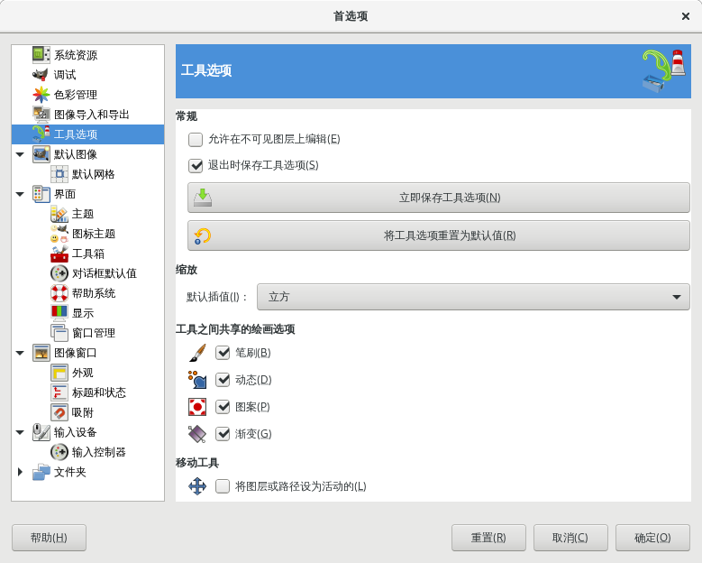

首选项→工具选项
这里可以对工具选项的参数进行设置。

首选项→工具选项
允许在不可见图层上编辑
勾选此项后，在图层堆栈中，即使图层是不可见状态，但只要该图层是被选中状态，您就可以对其进行编辑，只不过，您无法实时看到编辑效果。
退出时保存工具选项
退出GIMP时，会保存工具选项；下次再启动GIMP，工具选项的设置与上次退出时相同。
立即保存工具选项
马上保存工具选项相关设置。
将工具选项重置为默认值
重置工具选项相关设置到GIMP默认值。
默认插值
修改图像的尺寸时，GIMP会对图像的现有像素进行插值计算，以生成新的图像。这个选项决定了默认使用的插值计算方法。
无：这是最快的方法，但效果可能比较差。
线性：这个选择对于大多数图像已经够用。
立方：这是选项是默认选项，它的效果通常最好，但也是最慢的。
无光晕：此方法可执行高质量的插值。当您将图像缩小到不到原始尺寸的一半时，可以考虑使用此方法。
低光晕：此方法可执行高质量的插值。当尺寸大小不变，只是做旋转、剪切等操作时，可以考虑使用此方法。
工具之间共享的绘画选项
笔刷，动态，图案，渐变：您可以在此决定在为一种工具调整笔刷、动态、图案、渐变四个项目时，是否应用于所有工具，或者每个工具(铅笔，画笔，喷枪等)是否应独自记住上次专门为其使用的项目。
将图层或路径设为活动的
您可以在这里决定在使用移动工具时，是否同时改变当前图层或路径的激活状态。